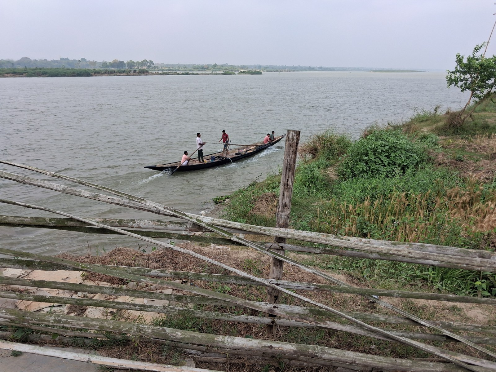
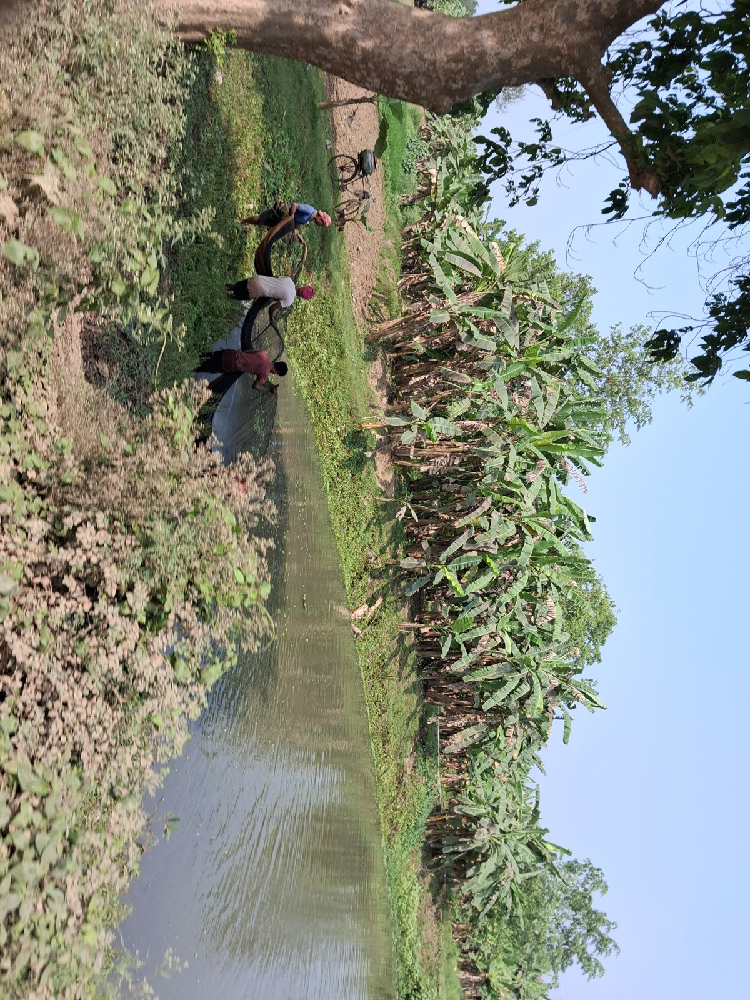
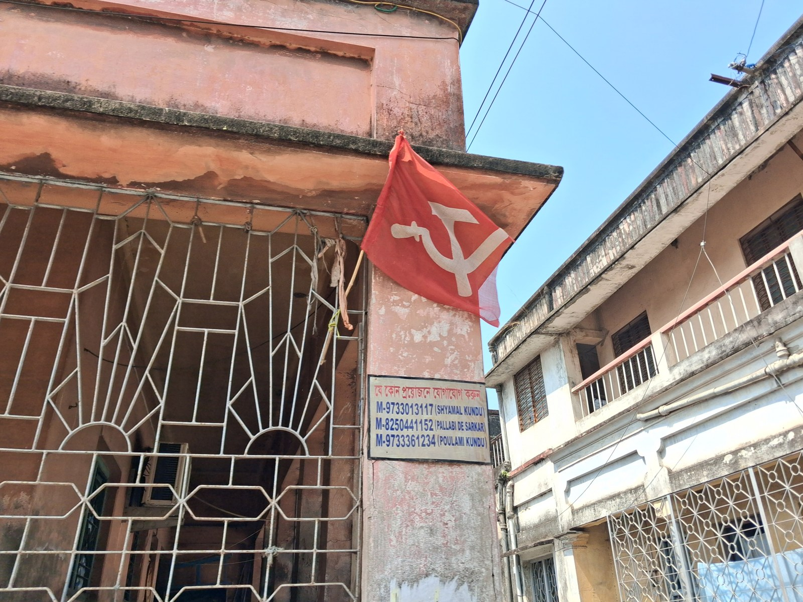
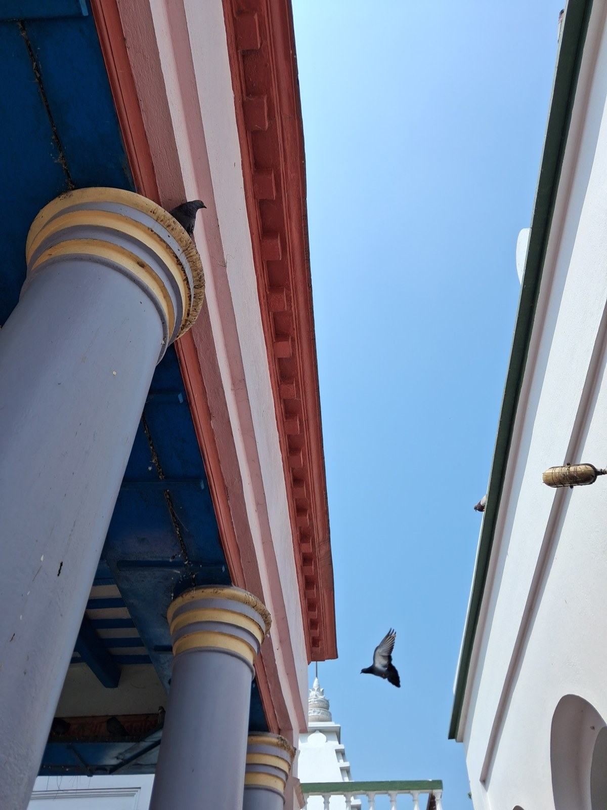

Beyond research
Outside work, I love organizing, meditating, and spending time near water. I have recently taken up running and am surprised by how much I look forward to it. I am also making time for Bengali fiction again.



